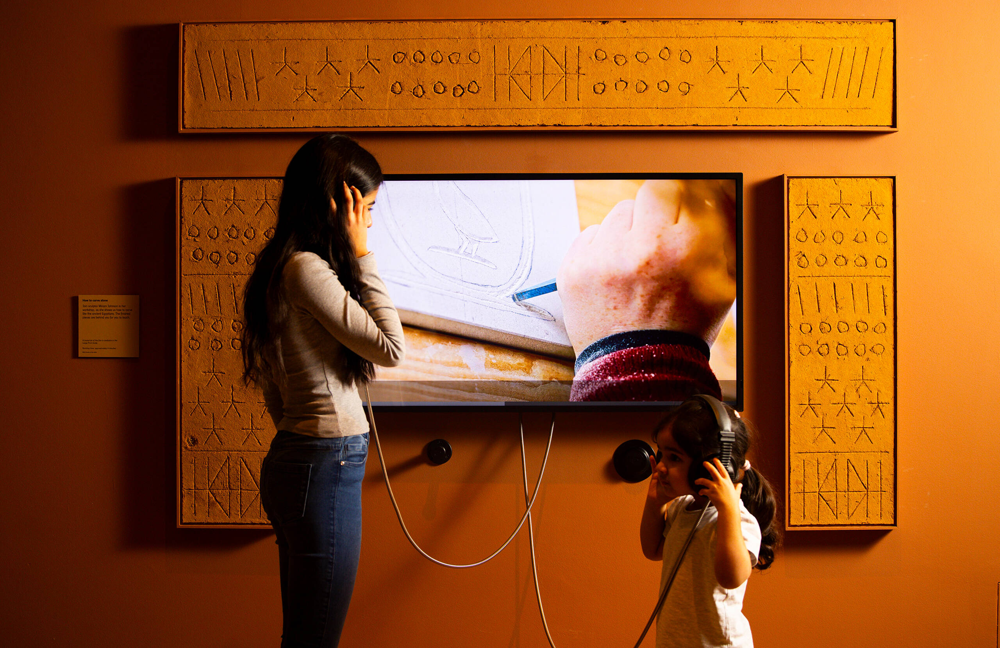
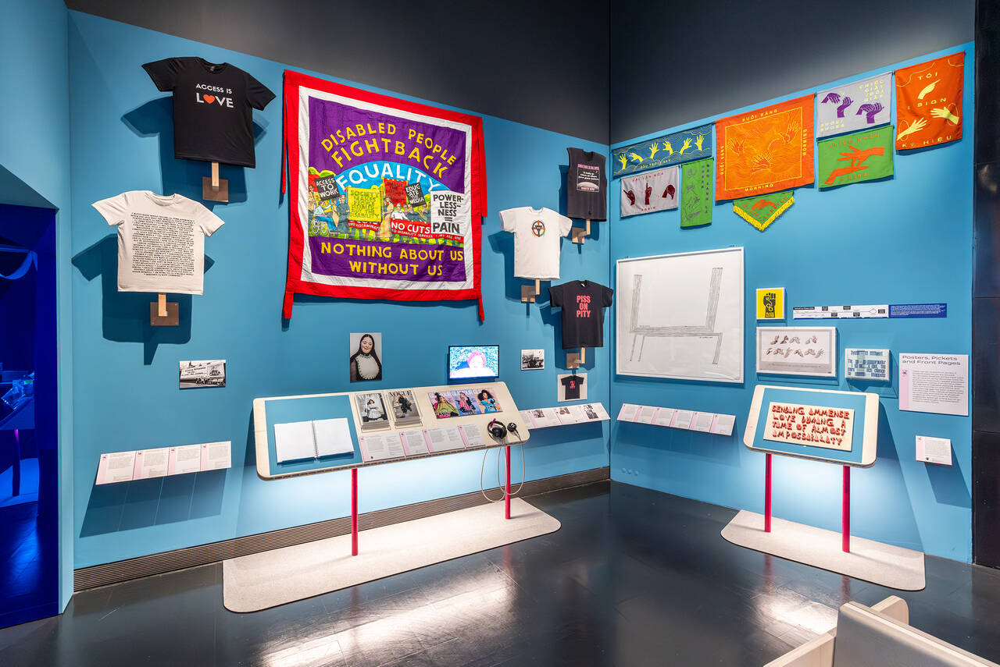

Сформировать представление о принципах разработки концепции выставки и показать последовательность перехода от идеи к пространственному решению.
Выставка — не простое размещение экспонатов в помещении. В проекте одновременно решаются:
Что должна понять аудитория после посещения?
Для кого создаётся выставка?
В какой последовательности посетитель получает информацию?
Как идея переводится в маршрут, зоны и экспозицию?
Как цвет, свет, графика, материалы и оборудование поддерживают идею?
Большая идея — краткая формулировка того, что выставка хочет сообщить посетителю и почему это важно.
Слабая идея: «Выставка о современном дизайне».
Сильнее: «Как современные дизайнеры превращают повседневные проблемы в новые возможности».
При разработке концепции определяем:
1 Вход → 2 Знакомство → 3 Исследование → 4 Кульминация → 5 Выход
Проблемный вопрос: «Можно ли назвать выставкой помещение, в котором просто расставлены экспонаты?» Краткое обсуждение.
Понятие концепции. Большая идея. Аудитория. Сценарий.
Анализ реальной выставки.
От идеи к пространству.
Разработка собственной мини-концепции.
Каждый студент представляет решение.
Тема, проблема, ограничения.
Материалы, объекты, контекст.
Для кого создаётся выставка?
Главное сообщение.
Порядок восприятия.
Планировка, свет, цвет, материалы, графика.
Проверка решения и доработка.
Представьте, что нужно создать небольшую тематическую выставку. За 20 минут разработайте:
Не просто «лекция»: показываем, как именно преподаватель работает со студентами.
Начать с вопроса: «Что превращает набор экспонатов в выставку?»
Показ реальных выставочных решений.
Студенты разбирают существующую выставку.
Создание собственной концепции.
Схема маршрута, план, мудборд.
Защита решения и получение обратной связи.
Выставка V&A построена вокруг идеи путешествия по страницам альбома/скетчбука Уильяма Кента.
Дизайнеры Hara Clark создали маршрут из полупрозрачных тканевых слоёв с изображениями эскизов Кента.
Посетитель двигался между слоями и постепенно открывал новые виды экспозиции.

Выставка о Древнем Египте и его влиянии на современную культуру. Дизайн здесь — не нейтральный фон.
| Критерий | Баллы |
| Чёткость идеи | 0–4 |
| Соответствие идеи аудитории | 0–3 |
| Логика сценария | 0–4 |
| Связь пространства и концепции | 0–4 |
| Визуальная целостность | 0–3 |
| Аргументация решения | 0–2 |
| Итого | 20 |
концепция целостная, аргументированная, все элементы связаны
концепция сформирована, отдельные элементы требуют доработки
идея понятна частично, связь элементов недостаточна
отсутствует целостная концепция
Доступность — не дополнительная опция, а часть проектирования опыта.
маршрут · ширина проходов · высота элементов · места отдыха
размер текста · контраст · субтитры · альтернативные форматы
звук · свет · тактильные элементы · выбор уровня сенсорной нагрузки
что такое концепция выставки и из каких элементов она состоит
сформулировать большую идею и определить целевую аудиторию
создать простой сценарий движения посетителя
связать содержание выставки с пространственным и визуальным решением
представить и аргументировать собственную концепцию
Рисунок 1. Интерьер выставки Design and Disability. V&A South Kensington, 2025. Фотография: Victoria and Albert Museum, London. Источник: V&A — Design and Disability: exhibition guide. https://www.vam.ac.uk/articles/design-and-disability-exhibition-guide
Рисунок 2. Архитектурный эскиз здания Всемирной выставки (Great Exhibition Building). Joseph Paxton, 1850. Victoria and Albert Museum, E.575-1985. Источник: V&A — The Great Exhibition of 1851. https://www.vam.ac.uk/articles/the-great-exhibition-of-1851
Рисунок 3. Эскизы первоначальной планировки выставки William Kent: Designing Georgian Britain. Hara Clark, 2014. Источник: V&A Blog — Back to the Drawing Board. https://www.vam.ac.uk/blog/designing-william-kent/back-drawing-board
Рисунок 4. William Kent: Designing Georgian Britain. Exhibition design: Hara Clark. V&A, London, 2014. Фотография: Nick Wood. Источник: Hara Clark — William Kent: Designing Georgian Britain. [указать ссылку]
Рисунок 5. Интерьер выставки Making Egypt. Young V&A, 2025. Фотография: Gareth Gardner. Источник: V&A — Making Egypt: Secrets of the exhibition’s design. https://www.vam.ac.uk/blog/museum-life/young-vas-making-egypt-secrets-of-the-exhibitions-design
Рисунок 6. Экспозиция Design and Disability, раздел Tools. V&A South Kensington, 2025. Фотография: Victoria and Albert Museum, London. Источник: V&A — Design and Disability: exhibition guide. https://www.vam.ac.uk/articles/design-and-disability-exhibition-guide
Рисунок 7. Тактильные и доступные элементы музейной экспозиции. National Museum of American History, Smithsonian Institution. Источник: Smithsonian — Tactile Elements and Accessible Exhibition Features. https://americanhistory.si.edu/visit/accessibility/tactile-elements-and-accessible-exhibition-features
Рисунок 8. Материалы и экспозиционное оборудование выставки Making Egypt. Young V&A, 2025. Источник: V&A — Making Egypt: Secrets of the exhibition’s design. https://www.vam.ac.uk/blog/museum-life/young-vas-making-egypt-secrets-of-the-exhibitions-design